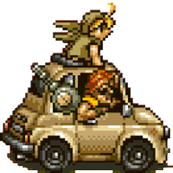
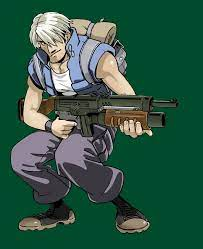
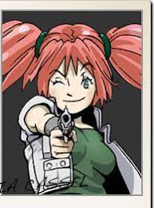
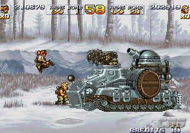
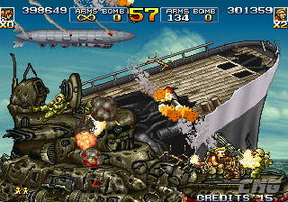
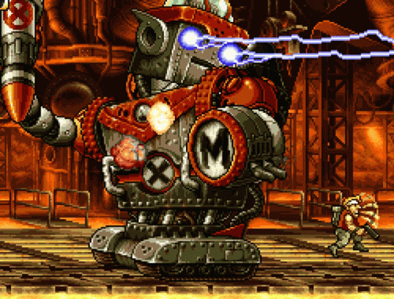
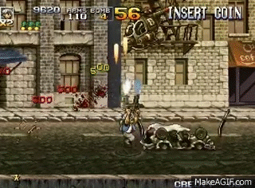

Año 2032. El miedo al terrorismo cibernético hace mella en la población, causando episodios de pánico y de caos. La situación empeora todavía más cuando un virus informático, el “White Baby”, infecta a las redes militares más importantes del mundo, causando un desconcierto y una desorganización nunca vista antes en las Fuerzas del Gobierno. El mundo vuelve a estar amenazado, acababa de comenzar la Crisis del White Baby y en esta ocasión sería Internet el foco del problema.
Rápidamente, los líderes mundiales convocan una conferencia acerca de las contramedidas a llevar a cabo contra ese ciberterrorismo. De esa conferencia salen varias conclusiones muy importantes. La primera, es que se identifica al causante del virus informático, un sindicato llamado Amadeus. La segunda, que deben aumentarse y mejorarse los protocolos de seguridad de las instalaciones militares. Pero para ello habrá que luchar, y no sólo en la red de redes.
El sindicato Amadeus es una compañía fundada en algún momento en los años 2030 o 2031. Su base central de operaciones es secreta, aunque se piensa que está en algún lugar de Oceanía. Gracias a incontables operaciones financieras con sus bancos repartidos por infinidad de lugares del planeta, acaban amasando una enorme fortuna y de este modo, su líder, Amadeus, amigo de Morden, comienza a abastecer a la Rebelión con nuevas armas y tropas.
Es en ese momento cuando las autoridades militares ponen en marcha una nueva misión que llevará a cabo el escuadrón de las Fuerzas Especiales, los Peregrine Falcons. Su objetivo, localizar y acabar con las fuerzas de Amadeus. El motivo que empuja a elegir a dicho escuadrón es evidente, pues han recibido entrenamiento militar que los hace capaces de resolver cualquier situación hostil, toda una garantía de poder hacer frente a esta nueva amenaza. Pero no disponen de mucho tiempo, ya que los informes de inteligencia más recientes conseguidos en diferentes regiones del mundo, revelan que Amadeus dispone de los medios suficientes para realizar un ataque inminente en las instalaciones de comunicaciones de cualquier país, en sólo unas pocas horas.
Tarma y Eri son enviados en una misión para proteger a los científicos que están desarrollando una “cura” para el virus White Baby. Paralelamente a ellos, otros cuatro héroes, Marco, Fio, Trevor y Nadia, se despliegan para llevar a cabo una misión para acabar con la mismísima Amadeus. Pero no va a ser fácil, puesto que son múltiples los peligros que acechan. Lo más desconcertante es que poco antes de su partida, reciben una imagen vía satélite que muestra una serie de figuras pertenecientes a las fuerzas de Amadeus. La cara de una de estas figuras... sorprende a todos los presentes.
| TREVOR |  |
| NADIA |  |
¡Esta imagen mostraba la cara del malvado General Morden! La situación no puede ser más crítica. Son muchas las incógnitas. ¿Lograrán detener al virus informático White Baby? ¿Son las fuerzas de Amadeus tan poderosas? ¿Qué relación existe entre el sindicato del terror Amadeus y el general? Había que dar respuesta a estas preguntas.
 Se sucedieron las escaramuzas y los combates, y se pudo destruir las instalaciones que amenazaban la paz mundial. Tras ello, descubren que el General Morden en realidad no está implicado con el sindicato, y que lo que vieron en el monitor no fue sino uno de los incontables robots, clones del general. Su subordinado, Allen O'Neil también queda expuesto a estos experimentos biónicos pero tras un largo combate acaba siendo vencido y destruido.
Acaban conociendo al verdadero líder del sindicato, un científico loco llamado Amadeus el cual ha creado una serie de robots gigantescos para combatir contra nuestros héroes. Tras vencer a todos los robots, las instalaciones acaban derrumbándose en lo que parece ser un proceso de autodestrucción de toda esa tecnología. El propio Amadeus desaparece y es dado por muerto una vez queda zanjada la Crisis del White Baby.
 